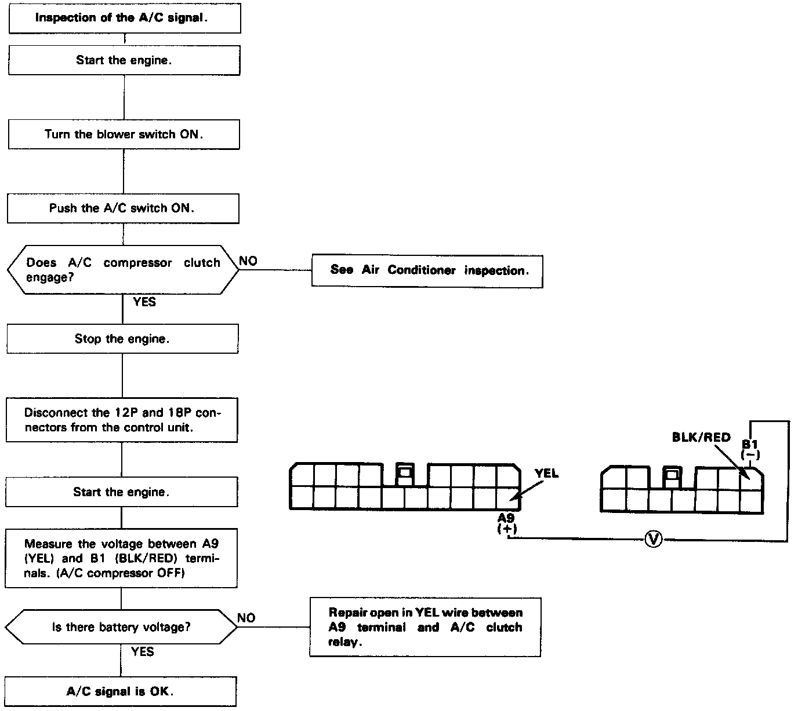

Operation CHARM
: Car repair manuals for everyone.
Home
>>
Acura
>>
1992
>>
Integra L4-1834cc 1.8L DOHC FI
>>
Repair and Diagnosis
>>
Transmission and Drivetrain
>>
Transmission Control Systems
>>
Testing and Inspection
>>
Component Tests and General Diagnostics
>>
A/C Signal Circuit Troubleshooting
A/C Signal Circuit Troubleshooting

Troubleshooting Flowchart
Lock-up clutch does not have duty operation (ON / OFF). Lock-up clutch does not engage. / Inspection of
A/C signal
.